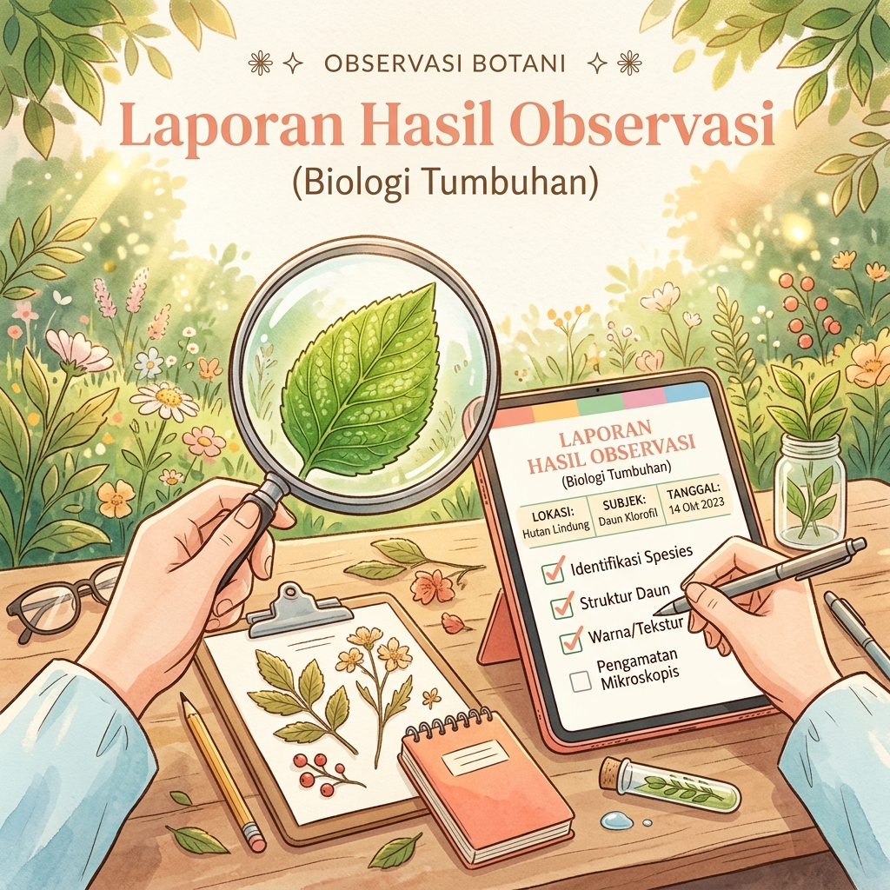

Karya Tulis & Esai Literasi
Halaman indeks dokumentasi esai argumentatif, laporan hasil observasi (LHO) lingkungan, puisi sastra, dan resensi buku.
Artikel Pilihan Bahasa Indonesia
Kumpulan artikel edukatif mengenai kebahasaan, struktur teks argumentasi, laporan observasi, dan biografi.
Membangun Vernakular Kritis: Seni dan Struktur Menyusun Teks Argumentasi
Memahami pentingnya argumen logis, bukti empiris, dan struktur kohesif dalam menyampaikan gagasan persuasif yang berbobot di era transformasi informasi digital.

Menyingkap Realitas Melalui Pengamatan: Prinsip Penulisan Teks Laporan Observasi
Panduan komprehensif mengenai tata cara mencatat data fakta, klasifikasi fenomena alam dan sosial, serta keakuratan deskripsi dalam teks Laporan Hasil Observasi.

Rekam Jejak Tokoh Inspiratif: Memahami Struktur dan Nilai Teladan Biografi
Menggali kisah perjalanan hidup, perjuangan menghadapi rintangan, dan keteladanan para tokoh bangsa melalui penulisan narasi biografi yang mendalam.
Daftar Tugas & Karya Siswa
Koleksi tugas harian dan portofolio penulisan Bahasa Indonesia.
Peran Kecerdasan Buatan dalam Transformasi Pendidikan Modern
Sebuah analisis kritis mengenai pemanfaatan AI sebagai asisten belajar siswa dan tantangan etika penggunaan teknologi di sekolah.
Laporan Hasil Observasi: Keanekaragaman Taman Sekolah
Laporan rinci hasil pengamatan lapangan struktur dan klasifikasi vegetasi tanaman hijau di lingkungan sekolah.
Resensi Novel "Laskar Pelangi" Karya Andrea Hirata
Ulasan mendalam mengenai kelebihan, kekurangan, serta pesan moral semangat pendidikan dari novel fenomenal Laskar Pelangi.
Antologi Puisi: Jejak Pengembara Digital
Kumpulan bait puisi kontemporer mengenai pergulatan emosi dan jati diri pemuda di era serba digital.